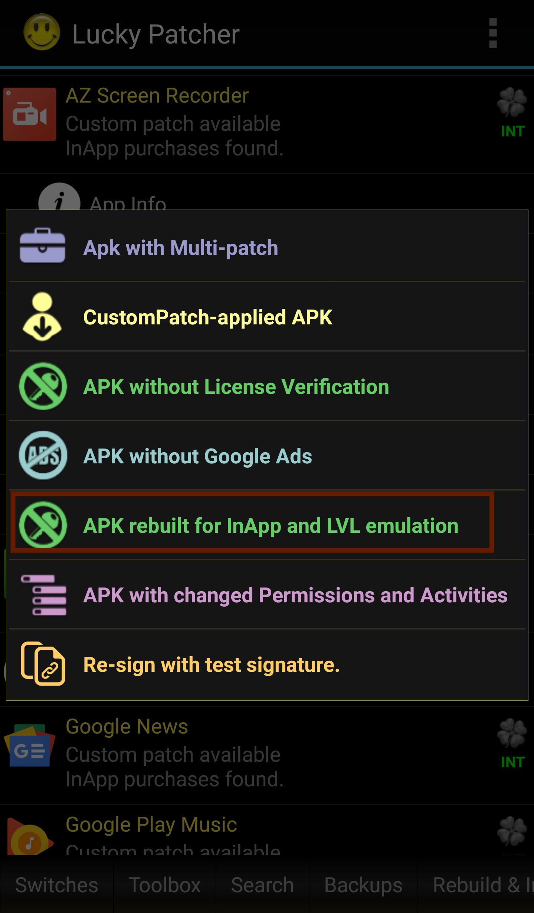

Lucky Patcher No Root - How to Hack Android Games Without Root
These days almost everyone is addicted to games. Whether they are mobile games or PC games, people are always after them. On the other side, there are many people who are addicted to different other apps like productivity apps, business apps, education apps, communication apps etc. The usage of apps and games is rapidly increasing day by day.
Smartphones are an important part of our life and therefore everyone uses smartphone apps and games. Android Device users use Google Play Store which has over millions of apps and games. Many of the apps and games are free but some are free just for the basic version. If you want to use all of the features of those apps, you will have to upgrade to the premium version and for that, you will have to pay. As there are many apps like that in the Google Play Store so here the question arises how much will you pay for such apps? Are you tired of paying for such Apps? If yes, then you are at the right place.
There are a few apps that allow us to hack Android Games and get in-app purchases for free. The best of all apps that allow us to hack Android Games and get in-app purchases for free is Lucky Patcher. Lucky Patcher is a free Android App that can hack many apps and games. Lucky Patcher allows you to hack Android apps, block advertisements, remove system apps, modify system apps, modify app permissions, remove license verification from paid apps, move apps to SD Card, backup apps before and after modifying, and much more. Lucky Patcher requires root access but you can also use Lucky Patcher without root to hack games. In this article, we will discuss how to hack Android Games without root. If you want to know how to hack Android Games with root then you can see this elaborate guide on how to hack Android Games with root.
Requirements
How to hack android games without root
Here's how to hack android games without root:
- Open the Lucky Patcher app and tap on the app that you want to hack.
-
Tap on Open Menu of Patches.

-
Now, tap on Create Modified APK File.

-
Then tap on APK Rebuild for InApp and LVL emulation.
 -
Tap on Rebuild the app.

- Wait for a few seconds until a window pops up in front of you. Now, tap on Go to file and then tap on Uninstall and Install. Allow your Android Phone to reinstall the app(if it asks for it).
- Once the app is installed, open the app and purchase anything you want.
That is all. You have succeeded in learning how to hack Android games without root. If you have any questions or queries regarding this article, feel free to ask us in the comments section. You can also contact us on Facebook.